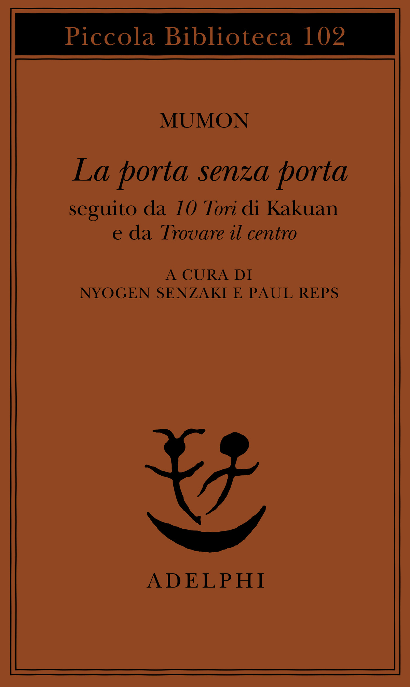
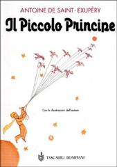
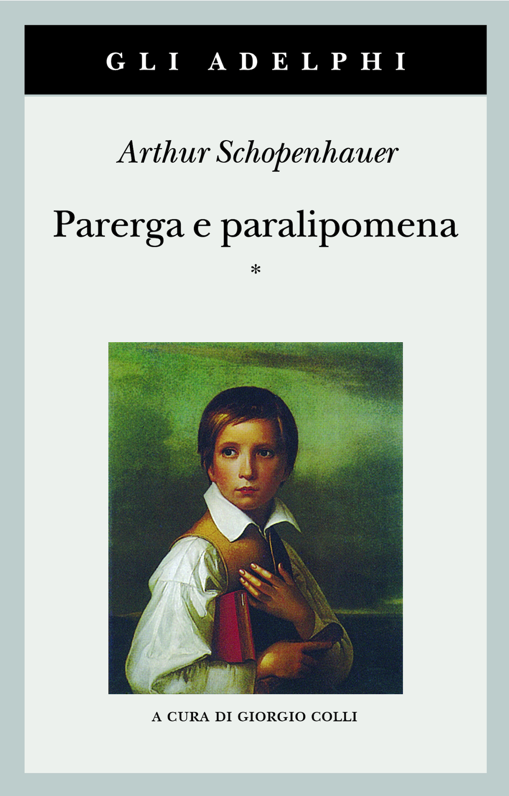

32:54 · 10 OPERE
Il sermone del fiore: il dicibile nell’indicibile.
Il filo del discorso
Il racconto del Buddha che alza un fiore e del sorriso di Mahākāśyapa introduce una riflessione su ciò che si può comprendere senza esaurirlo in una spiegazione verbale. Dr Divago collega il Sermone del fiore all’apertura del Daodejing e ai versi di Eterno di Ungaretti, insistendo sulla distanza fra significato e nome. Il centro del contributo è il dialogo fra Zhuangzi e Huizi sulla gioia dei pesci: il relatore vi legge una possibilità di conoscenza per prossimità e partecipazione, oltre la contrapposizione fra soggetti separati. L’analisi delle obiezioni logiche si intreccia al principio del wuwei, interpretato come comprensione non coercitiva. Il confronto con il Faust, con il prologo di Giovanni e con la Genesi apre una discussione sull’azione e sulla parola nella tradizione occidentale. Platone offre poi riferimenti alla meraviglia e all’amore, mentre Il piccolo principe e un aforisma di Schopenhauer completano l’appello a una conoscenza che coinvolga il sentire. La conclusione invita a evitare che le categorie di una tradizione rendano irriconoscibile un’altra. La scheda distingue questa proposta filosofica dai fatti storici: il racconto Chan, il testo taoista e i dialoghi platonici hanno origini, voci e funzioni differenti. Le immagini di unità e di superamento della separazione non vengono trasformate in una dimostrazione scientifica della reversibilità delle cause o dell’inutilità della logica.
I libri nel discorso

Sermone del fiore (il fiore e il sorriso)
Copertina della raccolta: COPERTINA DELLA RACCOLTA La porta senza porta, Mumon, seguita da 10 Tori di Kakuan e Trovare il centro, a cura di Nyogen Senzaki e Paul Reps, traduzione Adriana Motti. Piccola Biblioteca Adelphi 102, 1987, 14ª edizione indicata nel catalogo, 120 pagine, 11 tavole, ISBN 9788845904356. Copertina marrone intera. Non è una pubblicazione autonoma del Sermone del fiore o un testo scritto direttamente dal Buddha.
Immagine autentica della raccolta che include il caso 6, distinta dal singolo racconto. Tradizione di trasmissione: non prova della storicità del gesto del Buddha né dell’uso di questa edizione nel video.
Sermone del fiore, il fiore e il sorriso; racconto esplicito, attestato nel Mumonkan caso 6.
Passaggio 0:01 ↗ · Fonti e libro ↗
Tao tê ching
Copertina: Adelphi · Tao tê ching · edizione di riferimento
Immagine associata all’ISBN di riferimento e controllata visivamente; edizione e traduzione non identificate come quelle citate o lette nel video.
Daodejing, incipit sul Dao e sul nome; secondo richiamo al capitolo 37.
Passaggio 3:28 ↗ · Fonti e libro ↗
Eterno
Identificazione probabile
Copertina della raccolta L’allegria: Fondazione Arnoldo e Alberto Mondadori · L’allegria · edizione critica, 1982
Copertina autentica dell’edizione critica dell’Allegria curata da Cristiana Maggi Romano, Fondazione Arnoldo e Alberto Mondadori 1982. Eterno è una poesia della raccolta, non il titolo dell’intero volume. Il componimento non è riprodotto integralmente nella scheda.
Ungaretti, versi sul fiore e l’inesprimibile nulla: poesia Eterno, titolo non pronunciato.
Passaggio 4:11 ↗ · Fonti e libro ↗
Zhuang-zi (Chuang-tzu)
Copertina: Adelphi · Biblioteca Adelphi 121, 1982
Immagine autentica dell’opera, controllata visivamente; l’edizione di riferimento non è attribuita al filmato.
Zhuangzi e Huizi, dialogo della gioia dei pesci al fiume Hao, capitolo 17.
Passaggio 5:55 ↗ · Fonti e libro ↗
Bibbia
Copertina: San Paolo, 2014 · Nuova Versione dai Testi Antichi · edizione di riferimento
Salmo 139; seguono prologo di Giovanni e Genesi, con interpretazioni del relatore.
Passaggio 9:12 ↗ · Fonti e libro ↗
Faust
Copertina: BUR / Rizzoli · 2005
Immagine autentica dell’opera, controllata visivamente; l’edizione di riferimento non è attribuita al filmato.
Faust di Goethe e riformulazione in principio era l’azione, primo Faust, verso 1237.
Passaggio 16:07 ↗ · Fonti e libro ↗
Il piccolo principe
Copertina: Bompiani · Tascabili · edizione italiana di riferimento
Immagine autentica dell’opera, controllata visivamente; non identifica l’edizione usata nel video.
Il piccolo principe, passo sui fiori, capitolo VIII; poi l’essenziale e il cuore, capitolo XXI.
Passaggio 19:01 ↗ · Fonti e libro ↗
Teeteto, o sulla scienza
Identificazione probabile
Copertina: Feltrinelli · 1994 · traduzione di Luca Antonelli, introduzione di Salvatore Natoli, saggio di Davide Spanio
Immagine autentica dell’opera, controllata visivamente; l’edizione di riferimento non è attribuita al filmato.
Platone, meraviglia e Iris figlia di Thaumas: Teeteto 155d, dialogo non nominato.
Passaggio 23:42 ↗ · Fonti e libro ↗
Simposio
Identificazione probabile
Copertina: Adelphi · Piccola Biblioteca 81 · 1979
Copertina autentica dell’edizione di riferimento, controllata visivamente. Non identifica l’esemplare letto o citato nel video.
Platone, ricomposizione delle metà e Diotima di Mantinea: Simposio, titolo non pronunciato.
Passaggio 25:21 ↗ · Fonti e libro ↗
Parerga e paralipomena
Copertina del primo tomo: COPERTINA DEL PRIMO TOMO dell’edizione in due volumi indivisibili, Adelphi, gli Adelphi 141, 1998, 7ª edizione nel catalogo, 684 e 917 pagine, a cura di Giorgio Colli e Mario Carpitella, ISBN 9788845914225. Immagine ufficiale con un asterisco e ritratto di Felix Schadow. L’aforisma citato è nel SECONDO tomo, non nel primo; l’immagine rappresenta l’edizione complessiva e non la copertina del tomo del passo. Opera originale del 1851.
L’immagine rappresenta il frontespizio dell’edizione Classici 1983. Il volume illustrato è distinto da quello del passo citato; non identifica il secondo tomo.
Parerga e paralipomena, titolo esplicito; citazione della mongolfiera dal tomo II, 31, §407.
Passaggio 27:29 ↗ · Fonti e libro ↗